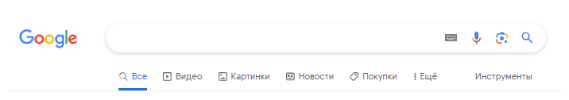
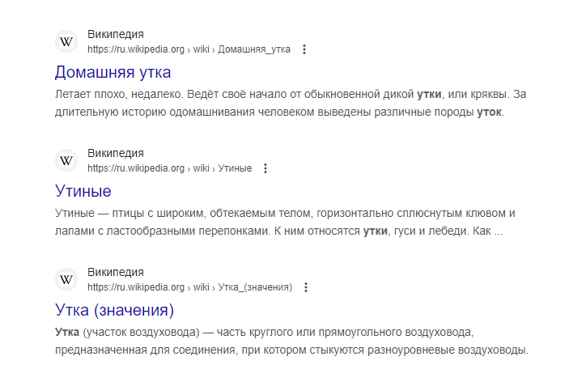
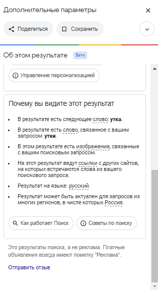
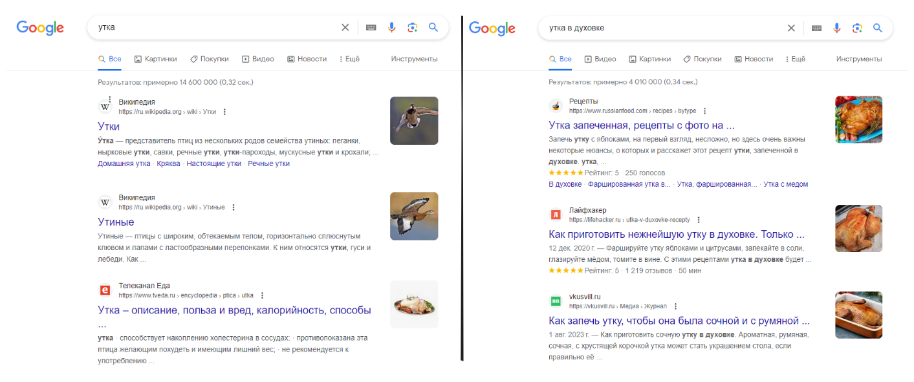
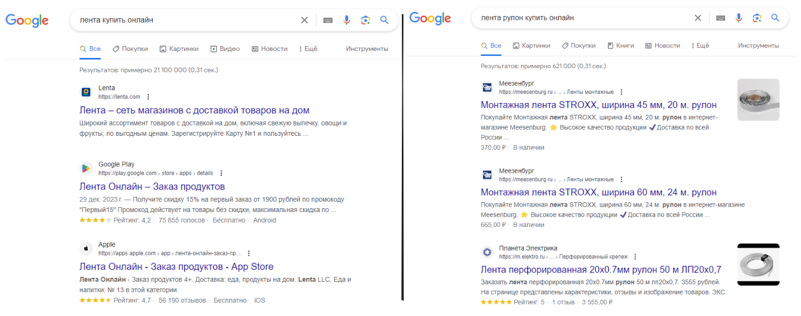
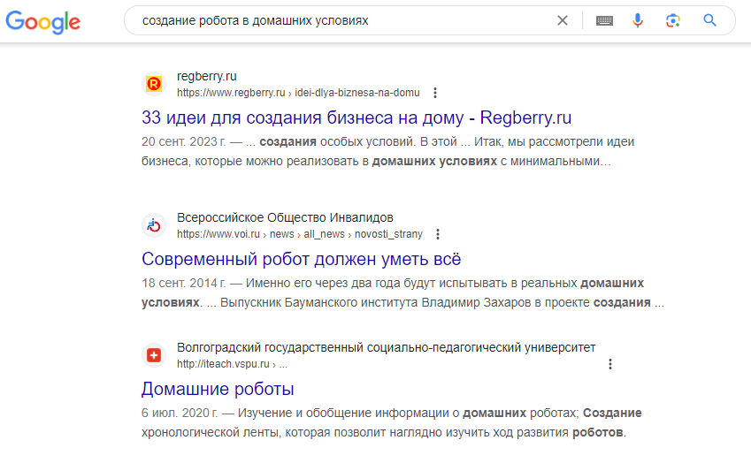
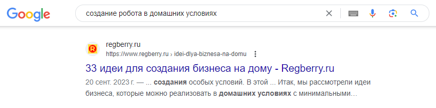

Основы поиска в Google
Интерфейс Google¶

Интерфейс Google обладает следующими элементами:
- Строка для ввода текста, или поле поиска.
- Категории поиска: "Все", "Изображения", "Видео", "Карты" и др.
- Панель инструментов.
Для осуществления поискового запроса необходимо ввести запрос в поле поиска. После ввода запроса мы получаем результаты, основанные на многочисленных факторах, однако ключевым является сам запрос пользователя.
Результаты поиска включают в себя список веб-сайтов, изображений, видео, а также специализированные блоки (популярные ответы, статьи из Википедии, приложения и др.), а также рекламные блоки, которые всегда помечены как "Реклама" и представляют собой платные объявления.
Интересно
Многие люди используют поисковик, чтобы быстро исправлять ошибки в словах. Вместо того чтобы править текст напрямую, они просто пишут интересующее слово или текст в строке поиска, а Google исправляет их ошибки. Таким образом, поисковик становится своего рода цифровым помощником в коррекции ошибок.

Представление веб-сайтов в результатах поиска обладает следующей структурой:
- Название сайта и его логотип выше результата.
- URL-адрес и путь к странице результата ниже.
- Кнопка "подробнее о результате"
- Заголовок страницы.
- Краткое содержание (или сниппет).
- Возможные поля с тегами, рейтингом, стоимостью, быстрыми ссылкам и другими деталями.
Существует множество браузерных расширений, которые облегчают взаимодействие с результатами поиска. Они способны блокировать рекламу и фишинговые сайты¹, отображать уровень популярности сайта и предоставлять различные другие полезные функции. Однако, несмотря на наличие таких инструментов, часто бывает достаточно информации, предоставляемой Google. Кроме того, с накоплением опыта вы научитесь эффективно работать и без использования дополнительных расширений.
Кнопка "Подробнее о результате", представленная в виде вертикального троеточия рядом с URL-адресом, позволяет получить дополнительные сведения. Эта функция дает доступ к информации об источнике индексации, времени индексации и причинах отображения данного результата. В основном этим пользуются веб-мастера и специалисты по созданию веб-сайтов. Однако, если вы сталкиваетесь с результатом, который не соответствует вашему запросу, кнопка "Подробнее о результате" позволяет ознакомиться с дополнительной информацией: почему этот результат был вам показан, какие ключевые слова привели к его отображению.

Ранее, в нижней части страницы результатов, мы могли обнаружить пагинацию. Часто количество результатов превышает несколько сотен миллионов, и с учетом фильтрации информации Google распределяет их по нескольким страницам. Фильтрация организована так, чтобы пользователь увидел наиболее релевантные результаты, учитывая запрос, местоположение, тип устройства и предыдущие запросы.²
На момент января 2024 года Google отказался от использования явной пагинации. Теперь, при прокрутке страницы с результатами, они автоматически добавляются по мере необходимости. Когда мы достигаем отображения в 60 результатов на странице, появляется кнопка "Еще результаты", которая загружает дополнительные веб-сайты.
Обрати внимание
Чем ниже мы спускаемся по странице с результатами, тем более неподходящие результаты мы видим. Если мы не смогли найти информацию в первых 60 результатах, следует изменить запрос.
Не забывайте использовать горячие клавиши и интерфейс вашего браузера. Например, если вы начали вводить "vk" и видите внизу подсказку https://vk.com, экономьте свое время: вместо того, чтобы заходить на сайт поисковика, просто нажмите стрелку вниз и Enter.
Зачем это полезно? Когда вы фокусируетесь на вводе, вам труднее сохранить поток своих мыслей. Вы не можете одновременно размышлять о чем-то еще, вписывая текст до конца. В случае внешних отвлечений, вы можете забыть, для чего вам вообще нужно было зайти на сайт, а точно ли вы ввели нужный запрос?
Больше слов, больше дела¶
Есть негласное золотое правило поиска: Чем больше слов, тем меньше результатов, но и точнее результат.
Больше слов в запросе — это не просто дополнительные символы, а ключи к открывающимся замкам виртуальных хранилищ
информации.
Разберем небольшой пример, мы хотим приготовить утку, введем два запроса:

Да я соглашусь с вами, это очевидно. Чтобы найти рецепт блюда из утки, мы должны вписать "рецепт утки", "утка в духовке" или "утка под соусом". Хорошо возьмем более сложный пример, мы хотим купить ленту для упаковки нашего подарка:

Если вам удалось сразу правильно сформулировать запрос, как в примере корректного варианта, то поздравляю вас с отличным владением навыками поиска!
Важно всегда помнить, что наше взаимодействие происходит не с человеком; Google не располагает контекстом и не может знать ход ваших мыслей. Это мощная библиотека, обладающая огромным объемом информации, а мы способны отслеживать и находить каждое слово в ней.
Однако
избыточность слов может только ухудшить результаты, важно поддерживать баланс.
Например:
- Заместо вопроса
"Что такое смартфон?"используйте запрос"Смартфон это". - Вместо длинного запроса
"Что делать, если не работает интернет на моем домашнем компьютере с системой Windows?"предпочтительнее написать"Не работает интернет Windows". - Замените вопрос
"Когда родился политик Уинстон Черчилль?"на запрос"Уинстон Черчилль дата рождения".
Ключевые слова¶
Ваш неотъемлемый союзник - терминология³. Если в вашем запросе использовать слова, тесно связанные с темой поиска, поисковая система лучше поймет вас, чем если бы вы обращались к ней в более разговорной форме. Важно освоить это и выбирать ключевые слова, четко отражающие ваш реальный запрос.
Обрати внимание
Не забывайте варьировать формулировки и использовать схожие по смыслу слова! Многие люди способны выражать одну и ту же информацию, используя разные слова и термины. Ошибки бывают у каждого. Если вы не можете найти нужную информацию, попробуйте изменить свой запрос на вариант с альтернативными формулировками, подумайте, как еще можно было бы сформулировать запрос для получения необходимой информации.
Например, при поиске информации о новых технологиях в области искусственного интеллекта необходимо избегать простых "AI" или "искусственный интеллект". Google выдаст слишком много результатов, не соответствующих вашему запросу. Рекомендуется более тщательно фильтровать запрос, указывая конкретные термины, такие как "машинное обучение", "нейронные сети", "алгоритмы глубокого обучения".
Но почему ключевые слова так важны для поиска?
Основная идея заключается в оптимизации контента веб-сайтов. Специалисты по SEO⁴ тщательно работают над сайтом, чтобы пользователи могли быстро находить информацию. Они встраивают определенные ключевые слова в контент и метаданные сайта, сообщая роботам о содержании страницы и общем контексте.
С ростом числа веб-сайтов началась настоящая гонка за первые места в результатах поиска. Владельцы сайтов иногда преувеличивают информацию, чтобы сделать свой ресурс более релевантным, но такую практику легко распознать по отсутствию нужной информации на их сайте.

Глубокое погружение в SEO в данном контексте выходит за рамки нашего рассмотрения. Мы лишь хотим выделить классификацию ключевых слов.
В SEO ключевые слова могут быть классифицированы как:
- Низкочастотные: это узконаправленные формулировки, например, "книга для изучения английского языка студенту".
- Среднечастотные: четко выраженные намерения пользователя, как "купить смартфон Samsung".
- Высокочастотные: общие слова или короткие фразы, по которым сложно понять, что именно ищет пользователь, например: "выпускник", "украшения", "инструменты", "ремонт".
Какая польза от этого?
- Точность запросов: Разделение ключевых слов на низкочастотные, среднечастотные и высокочастотные помогает лучше формулировать запросы. Это особенно полезно при поиске специфичной информации.
- Экономия времени: Знание различий между типами ключевых слов помогает пользователям сократить время поиска. Выбор более конкретных фраз способствует быстрому нахождению нужной информации.
- Понимание результатов поиска: Пользователи, понимающие разницу между частотами ключевых слов, могут более осознанно оценивать результаты поиска. Например, осознание того, что "гимнастика" может охватить широкий спектр тем, помогает уточнить запрос для получения более конкретной информации.
После небольшой практики в выборе ключевых слов, вы освоите этот навык, и вам будет даваться это легче. В настоящий момент это может показаться сложным. Умение критически относиться к информации — то, что действительно требуется развивать.
Визуальная фильтрация¶
Один из первых этапов в визуальной фильтрации результатов – это использование категорий. Важно четко определить для себя, что именно вы ищете: изображение, видео, статью или книгу. Также следует помнить, что некоторые запросы могут привести к результатам только в определенной категории.
Например, при поиске информации об известном блогере по играм, вряд ли вы найдете что-то полезное в категориях изображений или покупок. В данном случае лучше выбирать все результаты или фильтровать по видео.
При принятии решения относительно конкретного результата стоит ориентироваться как на сам сайт, так и на заголовок страницы, предоставленный поисковиком.

В запросе "создание робота в домашних условиях" вероятно трудно найти что-то полезное на странице "33 идеи для создания бизнеса на дому", если, конечно, вам в это время не пришло в голову искать способы заработка на домашнем создании роботов.
В результатах поиска представлена краткая информация о каждой странице, и вам следует проанализировать ее, определить, какие именно части информации важны для вас. Не стоит тратить время на изучение каждого результата и анализа всего сайта в надежде найти нужную вам информацию.
Интересно
В сфере нейронных сетей сегодня существуют сервисы, способные переформулировать и выделить ключевые характеристики веб-страницы. Используя такие сервисы, вы можете ускорить процесс поиска нужной информации на сайтах. Введите запрос "краткий пересказ онлайн" и найдите лучший сервис.
Кроме того, важна "медиагибкость" – умение усваивать информацию в различных форматах. Не ограничивайтесь только текстовыми материалами, ведь существуют подкасты, видео и публикации в социальных сетях. Если вам нужно узнать, как починить розетку, не ограничивайтесь поиском только статей по этой теме; обратите внимание и на видео-объяснения. Важно помнить, что информация может принимать различные формы.
Самостоятельная работа¶
Постарайтесь наблюдать, как вы ищете информацию: на что обращаете внимание, как делаете выбор среди результатов. Затем попросите своего друга или коллегу провести аналогичный поиск по той же теме и сравните его методы нахождения информации.
Это упражнение поможет вам лучше разобраться с функционалом поисковика Google. И не забывайте об использовании дополнительных расширений в вашем браузере, которые могут значительно улучшить процесс поиска информации.